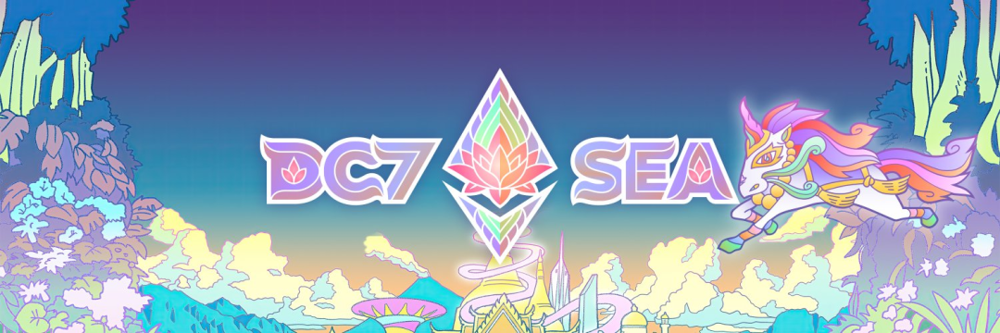
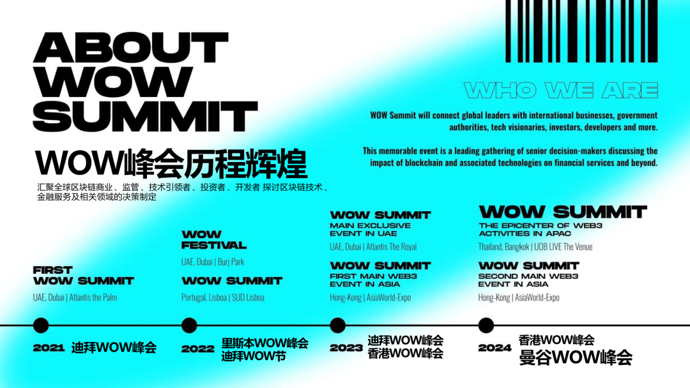
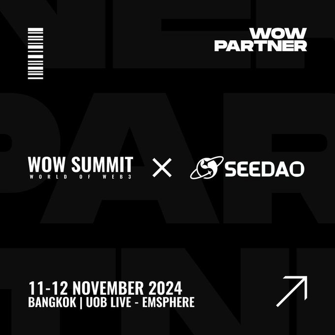
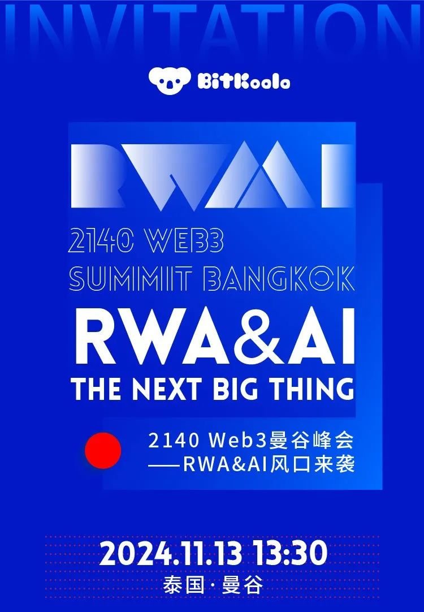
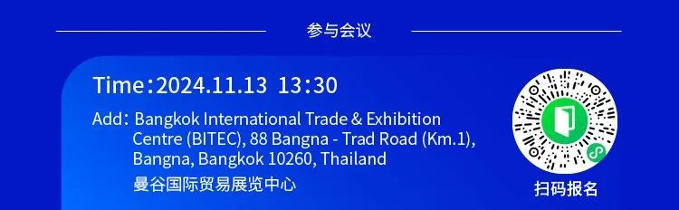

11月12-15日DevCon 7 即将拉开帷幕，Web3伙伴们慢慢聚集泰国·曼谷。
除了参加大会，S8市政厅品牌协调近期合作了一些side event，供大家参考&SNS成员免费参与。以下资讯不构成任何投资建议，DYOR
01
1、 时间：11月11-12日 曼谷

SeeDAO SNS 成员限时免费专享价值$299 门票体验
报名 lu.ma: https://lu.ma/wowbkk?tk=wEpxSn
02
时间：11月 11日 8:00-13:00（GMT+7）
活动主题：How to Achieve Optimal Coordination Solutions through Ethereum?
演讲嘉宾：
Vitalik Buterin丨以太坊联合创始人
Bruce丨LXDAO & ETHPanda 核心贡献者
Marcus丨LXDAO 核心贡献者
Joshua Tan丨Metagov 联创
Tim Pechersky丨Peeramid Labs 创始人
Alex Poon丨CharmVerse 联创
Ben Siegel丨Octant 产品经理
报名链接：https://lu.ma/85a84z21
03

04